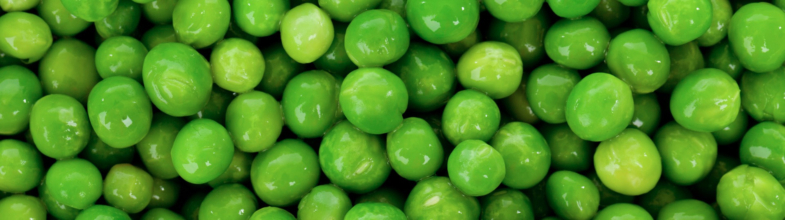

Nutz
首页
项目
Nutz(核心包)
NutzMore(插件与扩展)
NutzWx(公众号操作封装库)
NutzMongo(MongoDB驱动的薄封装)
NutzWeb(A Jetty launcher)
NutzQuartz(Quartz表达式解析执行类库)
NutzQrcode(二维码生成/解析)
zDoc(支持zDoc,markdown文档生成工具)
NutzLogo(跳蛋版实现)
Demo(社区提供)
文档
Nutz使用手册(核心包)
NutzAPI文档(核心包)
进阶手册(Wendal出品，偏实战)
zDoc使用手册
下载
社区
Nutz@码云
Light
Dark

Nutz1.r.60(原味青豆)发布
遵循
Apache协议
,永久免费,完整开源,商用也是免费
体积小巧(1M+) 且无依赖
功能强大: Dao, Mvc, Json, Ioc Aop以及各种帮助函数
全面的文档 + 极低的学习曲线
1000+ JUnit 保证质量坚若磐石
数年来被广泛应用到包括服务器，Android，嵌入式等各种开发场景
活跃的
Issue 列表
推动功能不断进化
充满JI情的
社区
...
下载 Nutz 1.r.60
Nutz 1.r.60 发行注记
最新更新
最新Nutz.jar
最新的代码提交
贡献者们
相关资源
Nutz@码云
Nutz@Github
下载列表
发布列表
FAQ
社区
Nutz官方社区
(你的问题总会被解答)
Nutz社区群：68428921
Nutz老群：58444676
Top ↑